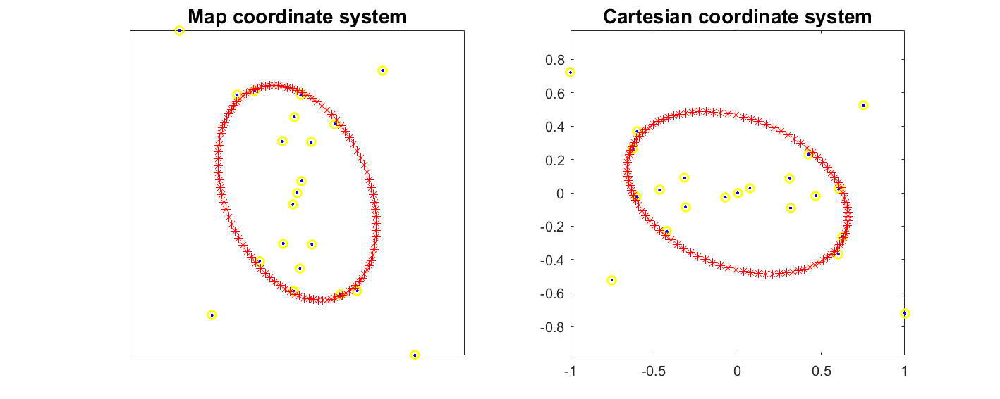

Contents
% Perform ellipse fitting and compare ellipse plot form as plot and plotm. clear; clc; close all;
Input Raw Data
Fit-failed data from Prestack Analysis in EPoffice
load hyperbolaData;
Do RANSAC filter of input raw data;
tmp=ellipseDataFilter_RANSAC(x); x=tmp;
Do Ellipse Fitting by calling funcEllipseFit_BFisher, a direct method
ellipse_1 = funcEllipseFit_BFisher(x(:,1), x(:,2)); maxR=max(ellipse_1(3),ellipse_1(4)); minR=min(ellipse_1(3),ellipse_1(4)); ecc=axes2ecc(maxR,minR); % Default azimuth should be in degree unit in function 'ellipse1' if ellipse_1(3)>ellipse_1(4) phi=ellipse_1(5)*180/pi; else phi=90+ellipse_1(5)*180/pi; end [lat,lon] = ellipse1(ellipse_1(1),ellipse_1(2),[maxR,ecc],phi);
Plot
figure; set(gcf,'Units','centimeters','Position',[5 10 25 10]); subplot(1,2,1) axesm mercator % plot raw data plotm(x(:,1),x(:,2),'b.','Linewidth',1.5); axis equal hold on; % plot filtered data plotm(x(:,1),x(:,2),'yo','Linewidth',1.5); % plot fitted ellipse plotm(lat,lon,'r*'); title('Map coordinate system','fontsize',14,'fontweight','bold'); hold off; subplot(1,2,2) % plot raw data plot(x(:,1),x(:,2),'b.','Linewidth',1.5); axis equal hold on; % plot filtered data plot(x(:,1),x(:,2),'yo','Linewidth',1.5); % plot fitted ellipse plot(lat,lon,'r*'); title('Cartesian coordinate system','fontsize',14,'fontweight','bold'); hold off;